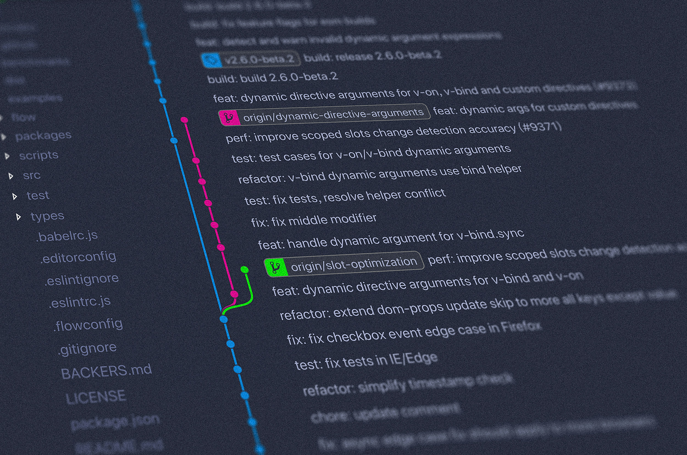

Unlock natural language understanding with accurate annotation services that scale securely, helping AI systems learn, adapt, and respond intelligently.
Annotalabs delivers text annotation services that turn raw text into structured datasets for AI and machine learning. This helps businesses train models that are more accurate and easier to scale. We provide secure, reliable, and cost-effective text labeling support through a global delivery model.
Our experts handle entity recognition, sentiment analysis, intent classification, and semantic annotation in accordance with your guidelines. With over 20 years of outsourcing experience and a deep global delivery model, Annotalabs delivers context-aware annotations for industries such as healthcare, retail, security, and financial services.
Our text annotation services cover a full spectrum of NLP tasks. In addition, we help businesses structure multilingual text datasets for powerful, AI-ready language models.
Identify people, places, organizations, and key entities in text. This helps AI models understand context and extract meaningful information accurately.
Tag positive, negative, or neutral emotions in textual content. As a result, AI models can better detect sentiment and interpret user emotions accurately.
Detect user intent to accurately improve conversational AI accuracy. In turn, this helps chatbots and assistants respond more naturally and effectively.

Group documents or messages into topics for easier classification. This enables AI models to organize and analyze text more efficiently at enterprise scale.
Add contextual meaning to text to improve prediction accuracy for NLP models. As a result, AI systems better understand intent and semantics across datasets.
Break sentences into meaningful word groups for deeper analysis. This helps NLP models understand structure and improve linguistic accuracy further.
Connect text entities to knowledge bases for richer model insights. This allows AI systems to understand context and strengthen information linking effectively.
Label inappropriate, harmful, or non-compliant text across platforms. In doing so, AI systems can detect and filter unsafe content more effectively across platforms.
Annotalabs blends human expertise with scalable processes to deliver precise, context-rich text annotation. As a result, we create high-quality datasets that power enterprise-grade NLP applications.
Skilled linguists ensure annotations capture nuanced meaning. This ensures every dataset reflects true linguistic context and intent.
Annotators handle diverse languages, dialects, and cultural nuances. As a result, AI models perform more accurately across global audiences.
Our flexible workforce adapts to projects of any size. Therefore, we scale quickly to meet evolving business and AI project needs.
We deliver secure, scalable, and affordable annotation services. In turn, enterprises trust us to power advanced AI and NLP applications.
With over 20 years in outsourcing, we bring proven BPO experience to every project. Moreover, our deep industry knowledge ensures reliable and efficient delivery.
We provide cost-effective services that maintain high quality. As a result, businesses can achieve their goals without overextending budgets.
Our SOC-compliant processes protect sensitive text datasets at every stage. In addition, strict access controls ensure complete data privacy and security.
We tailor annotation workflows for industries such as healthcare, retail, and security. Therefore, each project meets specific client and use-case requirements.
Every text annotation project undergoes multi-level quality checks. Consequently, we guarantee accuracy and consistency across all deliverables.
Our 1,500+ skilled annotators manage projects of any size efficiently. Furthermore, round-the-clock availability ensures rapid turnaround and timely delivery.
Here are answers to common questions about text annotation, accuracy, and outsourcing to help businesses scale their NLP projects effectively.
Text annotation is the process of labeling textual data with metadata such as sentiment, entities, or intent. As a result, these structured datasets help train natural language processing (NLP) models to interpret human language more accurately. Moreover, from chatbots to search engines, text annotation plays a crucial role in building reliable AI applications across industries.
It provides the supervised learning data necessary for models to understand context, sentiment, and entity relationships. Without high-quality annotated data, NLP models cannot accurately interpret human language.
Common techniques include Named Entity Recognition (NER), sentiment analysis, intent classification, semantic annotation, and part-of-speech tagging.
Healthcare (clinical notes), Finance (contracts), E-commerce (product reviews), and Customer Support (chat logs) benefit heavily from NLP text annotation.
We offer a dedicated, domain-trained workforce at a fraction of the cost of in-house teams, combined with a three-layer QA framework that guarantees 99.2% accuracy.